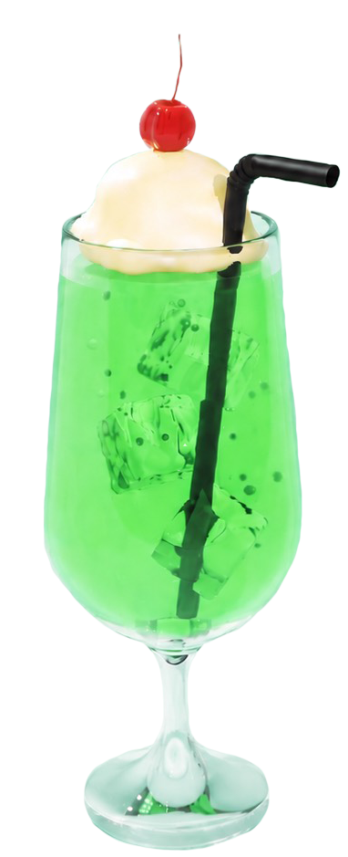

2006年生まれ、愛知県稲沢市出身。
グラフィックデザイナーを目指すため、
名古屋医療秘書福祉＆IT専門学校へ通う
専門学生です。
人の目を引くだけでなく、情報をうまく
伝えられるデザイナーを目指しながら
学校ではグラフィックデザインを学びながら、
ポスターや広告制作、ロゴデザインなど
様々なユーザーやクライアントの魅力を
引き出せるデザイナーを目指しています。

できること
ロゴ制作やグラフィック、ポスターなどのデザイン制作、 Web制作を行う際には、1つ1つのパーツを丁寧に作るように 意識して制作しています。
作品に使用するパーツやイラスト、ロゴ制作などで使用します。
画像補正や写真加工、ポスター制作などで使用します。
ポートフォリオやWebサイトのデザイン制作で使用しています。
サイト内のスイーツ画像を制作する際に使用しました。
わたしの強み
課題やターゲットを分析し、 デザインの方向性を組み立てることが得意です。
フォントや配色、余白など細かな部分まで 丁寧に調整し、完成度の高いデザインを 心掛けています。
相手の想いを大切にしながら、 分かりやすく伝わるデザインを目指しています。